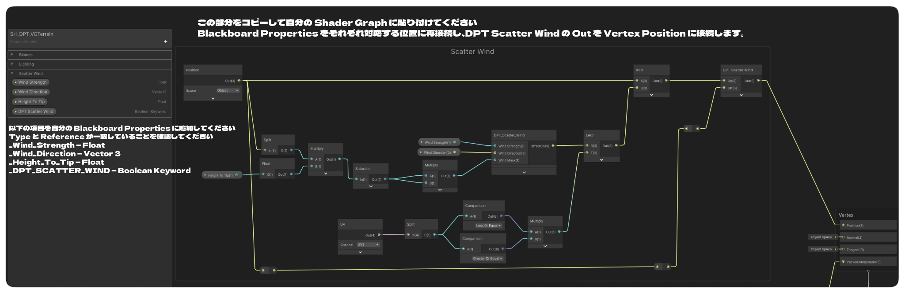

3D Scatter ガイド
再利用可能な設定から、複数の Terrain Atlas バイオームを対象に草、花、キノコ、小石、カスタムメッシュを配置します。
小さい画面では、横に長い表を左右にスクロールしてすべての列を確認してください。
3D Scatter システムは、Terrain Atlas のバイオームデータからインスタンス化されたメッシュを直接配置します。Scatter Object には、再利用可能な配置ルールと Mesh Variant のセットが保存されます。同じ草の設定をバイオームごとに作り直す代わりに、1つのオブジェクトへ複数の Target Biomes を追加し、必要に応じて各ターゲットに個別の Density Multiplier を設定できます。
Scatter は、草、花、キノコ、石、小型プロップなど、繰り返し配置するサーフェスディテール向けです。Terrain メッシュそのものは編集せず、各インスタンスに Collider を作成せず、配置物を個別の GameObject として生成することもありません。
Scatter Library の仕組み
Scatter の編集は各バイオーム Inspector の内部ではなく、Terrain Atlas の Biome Library 全体に対して行います。Vertex 3D Terrain ウィンドウの 3D Scatter セクションを開いて Library を作成、編集します。
| 項目 | 役割 | 重要なポイント |
|---|---|---|
| Scatter Object | 再利用可能な配置ルール、Wind の選択、1つ以上の Mesh Variant を保存します。 | 草を1回だけ設定し、Scatter Object 全体を複製せずに複数バイオームへ割り当てられます。 |
| Target Biome | 選択した Terrain Atlas バイオームが寄与する場所で、その Scatter Object の生成を許可します。 | 各 Target には 0～2 の Density Multiplier を個別設定できます。 |
| Mesh Variant | 内蔵プリセットまたは Custom Mesh と、その相対的な選択確率を設定します。 | 複数 Variant で同じ配置ルールを共有できます。 |
| Scatter Settings | Seed、Batching、Distance、LOD Transition、Far Density、安全上限を設定します。 | 各 Scatter Object で重複して設定するのではなく、Scatter Library 全体で共有されます。 |
| Active Terrain Renderer | Profile を選択中の Terrain Root に接続し、GPU Instancing で描画を送信します。 | 数千個の Instance を Scene 上の GameObject として作成する方式ではありません。 |
最初の Scatter Object を作成する
- Terrain Atlas パイプラインを使用し、Terrain にバイオームデータがペイントされていることを確認します。
- Vertex 3D Terrain ウィンドウで 3D Scatter を開きます。Profile がまだない場合は Scatter Library を作成します。
- + Add Scatter Object を選び、Meadow Grass など分かりやすい名前を付けます。
- Target Biomes で現在の Library から1つ以上のバイオームを選びます。
- 最初は各 Target の Density Multiplier を 1 にします。
- 全体の Density（1平方メートルあたりの Clump 数）、Spacing、Coverage 範囲、Slope、Scale、Surface Alignment を設定します。
- Mesh Variant を追加します。まずは内蔵 Grass プリセット、または Custom Mesh を割り当てて試します。
- Material を割り当てるか確認し、必要な場合は GPU Instancing を有効にします。大きな設定変更後に Preview が更新されていない場合は Rebuild Scatter を使用します。
例：Meadow Grass を1つ作り、Lush Grass を ×1.0、Dry Meadow を ×0.65、Forest Soil を ×0.25 で Target に追加します。同じ Grass Mesh、Colour Ramp、Roughness、Wind 設定を3つの Surface で再利用できます。
1つの設定で複数バイオームを対象にする
1つの Scatter Object から任意数の Terrain Atlas バイオームを Target にできます。Biome Picker には現在のバイオーム名と数値 ID が表示されます。+ Add Target Biome でリストを追加します。
| 設定 | 意味 | 例 |
|---|---|---|
| Biome | この Scatter Object の生成を許可する Terrain Atlas バイオームです。 | Grassland、Forest Soil、または現在の Library 内の別バイオーム。 |
| Density Multiplier: 0–2 | この Target Biome 上だけで Scatter Object の基本密度を乗算します。 | 1 は通常密度、0.5 は半分、0 はその Target を無効化、2 は2倍まで増やします。 |
ペイントされたブレンド領域では、Scatter Object が対象としている複数バイオームの寄与を合計して評価します。そのため Grass/Forest の境界でも、別々の重複定義を用意せず、同じ Scatter Object を連続して使用できます。
配置が受理された各 Instance には、その位置で寄与している Target に基づいた「所有バイオーム」が保持されます。これにより、1つの再利用可能な Grass Object が複数バイオームを対象としていても、Live Biome Modifier が片方だけを変更した場合、そのバイオームに属する Instance だけを独立して反応させられます。
配置設定
| 設定 | 意味 | 調整の目安 |
|---|---|---|
| Density: 0–100 clumps/m² | Target Biome の Multiplier と Live Runtime Density が適用される前の基本的な期待 Instance 密度です。 | 低い値から始め、Instance Count と遠景の Coverage を確認しながら増やします。 |
| Coverage Min / Max: 0–1 | すべての Target Biome の合計 Coverage が指定範囲内にある場所だけを配置対象にします。 | 薄いブレンドを除外するには Min を上げます。完全なバイオーム内部を除外するには Max を 1 未満に下げます。Max 1 なら通常どおり内部への配置を許可します。 |
| Spacing | この Scatter Object の Clump 中心同士に必要な最小ワールド距離です。Terrain Tile の境界をまたいでも適用されます。0 では制限しません。 | 密集や重なりを減らすには増やします。最終 Instance 数が Density の期待値より少なくなることがあります。中心間距離なので、大きな Mesh の外形同士は重なる場合があります。 |
| Max Slope: 0–90° | 指定した角度より急な Surface を除外します。 | Grass は Rock や Cliff Debris より低めの上限が適することが多いです。 |
| Scale Min / Max | 受理された各 Instance に適用する Uniform Scale のランダム範囲です。 | 自然な差を出しつつ不自然なサイズ差にならないよう、控えめな範囲から始めます。 |
| Alignment: 0–1 | 選択した Up Mode と Terrain Normal の間を補間します。 | 0 は選択した Up Direction に対して直立し、1 は Surface Normal に完全に追従します。 |
| Offset | サンプリングした Surface Normal に沿って Instance を移動します。 | Mesh が浮いて見える、または埋まる場合に小さな正負の値で調整します。 |
| Enable Wind | この Scatter Object で DPT Scatter Wind を使用します。この設定は、割り当てた Shader が DPT Scatter Wind に対応している場合のみ使用できます。 | 対応 Shader を使用する Grass、Flower、その他の柔らかい Mesh で有効にします。硬い Prop では無効のままにします。VCCORE Material は独自の Wind Data を使用するため、この設定は必要ありません。 |
岸辺だけに Reeds を配置する
- Reeds の Scatter Object を作り、Target は Water のみにします。
- 0.15～0.65 のような Coverage 範囲を使うと、Water が Mud とブレンドしている場所には Reeds を許可し、Coverage 1 の純粋な Water は除外できます。
- ペイントされた Transition Width と Coverage 範囲を調整して帯の位置を決め、その後 Density と Spacing で量と間隔を調整します。
Coverage はすべての Target Biome の寄与を合計します。Water と Mud の両方を Target にすると、その Transition 全体で合計 Coverage が 1 になる場合があり、同じ範囲設定では除外されます。必要な境界を表す部分 Coverage を持つバイオームだけを Target にしてください。Coverage は配置可能な Surface を絞り込み、バイオームごとの Density Multiplier はそこに出現する Clump 数を変更します。
内蔵プリセットとカスタムメッシュ
各 Scatter Object には複数の Mesh Variant を設定できます。Relative Chance は相対的な選択 Weight であり、合計を 100 にする必要はありません。配置 Seed を変えずに内蔵 Mesh の形だけを変えたい場合は、異なる Shape Seed を使用します。Preset の説明は Tooltip で確認できます。
| 内蔵プリセット | 適した用途 | 形状の補足 |
|---|---|---|
| Grass / Short Grass / Tall Grass | 草原、低い地被植物、背の高い植生。 | シーンに合う Silhouette を選びます。Near/Far Geometry により遠景の Population を軽量化できます。 |
| Flowers | 小さな花のまとまり。 | Seed と Ramp を組み合わせて変化を付けます。 |
| Lavender | 直立した紫色の花穂。 | 花を Cluster 化し、葉を少なくすることで、多数の独立した小花より Mesh を単純にしています。 |
| Ferns / Clover / Shrubs | 葉の多い下草や低木。 | Scale と Spacing で葉同士の過剰な重なりを抑えます。 |
| Reeds | 湿地や岸辺の植生。 | 比較的小さな標準 Stalk。Coverage Band と Spacing を組み合わせます。 |
| Pebbles | 小さな石の Cluster。 | Smoothing Angle で Smooth または Faceted な Lighting を選べます。 |
| Mushrooms | 林床のディテール。 | Colour Ramp は生成された各 Element のローカル Height に沿って評価されます。 |
| Crystals | 面の立った鉱物 Cluster。 | Smoothing Angle の初期値は 0 で、Sharp な面を保ちつつ調整できます。 |
| Fallen Branches | 地面の枝や Debris。 | 単純化された Twig と地面向きの形状です。急斜面では Alignment と Offset を確認します。 |
Shading と Surface Property
Crystals を含むすべての内蔵 Preset に Smoothing Angle: 0–180° があります。0 では各面を Flat のまま保ち、180 では接しているすべての面で Normal をブレンドできます。中間値では緩やかな接続を滑らかにしながら、鋭い Edge を維持できます。これは Lighting を変える設定であり、Mesh Silhouette や Terrain 全体の Smooth / Sharp 設定は変えません。
Vertex Colour Ramp は、生成された各 Element の Bottom から Top までローカルに評価されます。Smoothness は 0 の Rough から 1 の Polished までで、新しい Variant の初期値は 0.2 です。Metallic は 0～1 で金属反応を制御します。
生成 Mesh では Metallic を UV3.R に格納します。UV3.G には Raw Smoothness ではなく、Smoothness から算出された DPT の Packed Scale/Roughness 値が入ります。Custom Shader で正しく使用するには、この DPT Mesh Data を Decode する必要があります。
Emissive Scatter
内蔵 Variant で Emissive を有効にし、Ramp の HDR Colour で明るさ、Ramp Alpha で Glow Coverage を設定します。DPT は Emissive Biome と同じ方法で Coverage を Vertex Alpha に格納します。HDR Colour だけでは Emission は有効になりません。Material の Emission 設定も引き続き適用されます。見える Bloom は Scene の Post-processing に依存し、Emission 自体が Light Source を生成するわけではありません。
Custom Mesh
Custom Mesh を選択し、3D Mesh、必要に応じた Submesh Index、Material、必要に応じた Distant Mesh を割り当てます。Distant Mesh がない場合は Near Mesh を再利用します。Custom Mesh は作成済みの Normal、Vertex Colour、UV3 Surface Data を保持し、内蔵の Shading、Metallic、Smoothness、Emissive 設定で書き換えられることはありません。対応する DPT Scatter Wind を有効にすると、Wind/Biome Data を持つ Runtime Copy が準備され、元の Asset は変更されません。
Material の選択は重要です。 Scatter は GPU Instancing を使用します。Mesh Data と互換性のある Material を使用し、必要に応じて GPU Instancing を有効にしてください。Variant Material を空にすると、適切な場合は元の Terrain Material が使用されます。
距離、LOD、Renderer 設定
Scatter Settings を展開します。よく使う設定は Distance & LOD と Preview & Shadows にまとめられています。Cell Size、Wind Bounds、Tile ごとの上限、Up Mode、Runtime Discovery は Advanced を開きます。Placement 設定はコンパクトなペア Slider を使い、Scale Range は X/Y ではなく Min/Max と表示されます。
| 設定 | 意味 | 確認ポイント |
|---|---|---|
| Seed | Deterministic な Scatter 配置を決定します。 | Density Rule を変えずに配置パターンだけ変えたい場合に変更します。 |
| Cell Size | Culling と Draw のために Instance をまとめる World Space 上の Cell Size です。 | 小さすぎると Group 数が増え、大きすぎると Distance / Frustum Culling の精度が下がります。 |
| Draw Distance | Camera からこの距離を超えた Scatter の Submit を停止します。 | 実際の Game Camera と Scene Scale に合わせて設定します。 |
| LOD Distance | Near から Far への Transition の中心距離です。 | Mesh の変化が目立ちにくい距離を選びます。 |
| Transition | LOD Distance 周辺の滑らかな Stochastic Transition の幅です。 | 0 では即時切り替え。値を広げると、一定範囲で Near / Far Population が混在します。 |
| Live Crossfade | Live Biome の Strength または Scatter Density の変化に合わせ、各 Instance を双方向にフェードさせるオプションです。初期状態では無効です。 | Distance & LOD で有効にします。DPT Scatter Fade に対応する Material が必要です。Static Scatter は Live の変化を無視します。 |
| Fade Range: 0.01–1 | Live Density のアニメーション全体のうち、各 Instance がフェードする範囲の割合を設定します。初期値は 0.15 です。 | 値を大きくすると、より長い範囲で柔らかくフェードします。時間（秒）の指定ではなく、Live アニメーションの進行に従います。Live Crossfade を参照してください。 |
| Far Density: 0–1 | 完全に Far 側へ移行したときに残す Population の割合です。 | 安価な Geometry へ切り替えるだけでなく、遠景の Scatter 自体を間引きたい場合に下げます。 |
| Wind Bounds | Wind 有効 Scatter の Culling Bounds に追加する World Space の余白です。 | 強く動く Tip が元の Bounds から外れて消える場合は増やします。 |
| Instances / Tile | 1つの Terrain Source 上で受理できる Instance 数の安全上限です。 | 増やす前に Memory と Performance を確認してください。 |
| Candidates / Tile | 配置を試行する Candidate 数の安全上限です。 | Cap Warning が出た場合、単純に上限を増やす前に Density や Terrain Size を見直してください。 |
Up Mode と Preview
| Renderer 設定 | 用途 |
|---|---|
| World Up | Global +Y を Up Direction として使用する通常の Terrain。 |
| Root Up | Terrain / Root Transform の Up を使う回転した Terrain。 |
| Radial | 選択した Center / Reference から外側へ向かう方向を Up とする Planetoid や Spherical World。 |
| Up Reference | Root Up と Radial で使用する任意の Reference Transform。別指定がない場合は Terrain Root が使用されます。 |
| Scene Preview | Edit Mode で Scatter を表示します。 |
| Cast Shadows / Receive Shadows | Instanced Draw の Shadow を制御します。新しい Renderer では Cast Shadows が On で作成されますが、既存 Renderer は保存済みの値を保持するため確認してください。Shadow は近距離の見た目を改善できますが Render Cost が増えます。 |
| Animate Preview | Wind や Animated Material のために Scene View を継続的に更新します。静止 Preview では無効にできます。 |
| Runtime Discovery | 初期状態では Off です。Play 中に定期的な Discovery が必要なら有効にします。Nested Terrain Hierarchy や LOD Membership を変更した後は DPT_ScatterRenderer.RefreshSources() を呼ぶこともできます。直接の Child の変更は自動更新されます。 |
風の設定
DPT Scatter Wind には2段階の設定があります。Material 側では Shader 内の Wind 機能を有効／無効にし、Scatter Object 側の Enable Wind では、その Scatter Object が DPT Scatter Wind を使用するかを指定します。Scatter Object の Enable Wind は、割り当てた Shader に _DPT_SCATTER_WIND Boolean Keyword がある場合のみ使用できます。これにより Vertex 3D Terrain は、その Shader が DPT Scatter Wind に対応していることを判別します。
Vertex Terrain Material で使用する場合
- Material の Wind セクションを開き、Enable Wind を有効にします。
- Wind Strength を控えめな値から設定します。
- Height To Tip を Scatter Mesh の Object Space 上のおおよその高さに合わせます。これにより Base を固定したまま Tip 側で十分な Wind Movement が得られます。
- Compass Heading と Vertical Pitch を設定します。
- 3D Scatter セクションへ戻り、DPT Scatter Wind を使用したい各 Scatter Object で Enable Wind を有効にします。
- 強く動く Tip が Camera / Frustum 境界付近で消える場合は、Scatter Settings の Wind Bounds を増やします。
Pebbles など硬い Scatter は、同じ Material を使用していても Scatter Object 側の Enable Wind を無効のままにできます。
VCCORE Material
VCCORE は独自の Authoring 済み Wind System を使用するため、Scatter Object の Enable Wind は意図的に使用不可になります。これは正常な動作です。Stylized Color Swapper & Material Optimizer でモデルに Wind をペイントした場合、または DPT Asset Pack に Wind Data が設定済みのモデルを使用する場合、Scatter 用の追加 Wind 設定は必要ありません。Wind の有効化や調整は VCCORE Material 側の Wind 設定を使用してください。
独自の Shader Graph に DPT Scatter Wind を追加する
Custom Shader にすでに独自の Wind System がある場合は、そのまま既存の Wind を使用してください。以下の設定が必要なのは、Custom Shader Graph で Vertex Terrain Shader と同じ DPT Scatter Wind 機能を使用したい場合だけです。
SH_DPT_VCTerrain を開き、下の画像に示す Scatter Wind ブロックをコピーして、自分の Shader Graph に貼り付けます。次に Blackboard に以下の項目を追加し、Reference 名を完全に一致させてください。
| Blackboard 項目 | Type | Reference |
|---|---|---|
| Wind Strength | Float | _Wind_Strength |
| Wind Direction | Vector 3 | _Wind_Direction |
| Height To Tip | Float | _Height_To_Tip |
| DPT Scatter Wind | Boolean Keyword | _DPT_SCATTER_WIND |
- 付属の Vertex Terrain Shader Graph から Scatter Wind ブロック全体をコピーし、自分の Shader Graph に貼り付けます。
- まだ存在しない場合は、上記4つの Blackboard 項目を追加します。
- Wind Strength、Wind Direction、Height To Tip、DPT Scatter Wind を、参照画像と同じ位置へ再接続します。
- 最後の DPT Scatter Wind の Output を Graph の Vertex Position Input に接続します。
- Graph を保存し、その Shader を使用する Material を Custom Mesh Variant に割り当てます。
- Material 側で DPT Scatter Wind Keyword を有効にし、その後 Scatter Object の Enable Wind を有効にします。

既存の Vertex Animation がある場合：Shader Graph ですでに Vertex Position を変更している場合は、現在の Deformation Chain を単純に置き換えるのではなく、その既存の Object Space Position に Scatter Wind ブロックを組み込んでください。
ライブバイオームによる密度と色の変化
Terrain Surface に使用する4つの Live Biome Modifier Slot は、Target Biome ID に属する Scatter も制御できます。これにより、季節システムで地面と Vegetation を同時に変化させられます。
| Scatter Response 設定 | 意味 | Neutral 値 |
|---|---|---|
| Scatter Density: 0–1 | Target Biome ID に属する Scatter について、すでに生成済みの Instance のうち Draw に Submit する数を乗算します。 | 1。0 ではそのバイオームの Scatter を非表示にします。通常の Live 変更では配置自体を保持します。変化する Instance をフェードさせるには Live Crossfade を有効にします。 |
| Colour Multiplier | Target Biome ID に属する Instance の Generated Scatter Colour を乗算します。 | White。HDR 値を使えば Tint だけでなく明るくすることもできます。 |
例えば Winter Slot では、Grass Biome の Snow Dusting を増やしながら Scatter Density を下げ、Colour Multiplier を淡い霜色へ変化させられます。同じ再利用可能な Grass Object が Forest Biome も対象にしている場合でも、その Forest 所有 Instance は、その Biome ID が Live Slot の Target になっていない限り独立したままです。
季節変化の例：Summer は Scatter Density を 1、Colour Multiplier を White にします。Winter のピークでは Density を 0.05～0.25 程度、Colour Multiplier を冷たい淡色にしてみてください。付属の Dynamic Biome Demo Controller には、Dusting と同時にこれらの値を動かす Winter Animation の例が含まれます。
Material 側の設定は Terrain Material Settings、サンプル Controller は デモ & ランタイムガイド を参照してください。
Live 変更中に Scatter をフェードさせる
- 3D Scatter → Scatter Settings → Distance & LOD を開きます。
- Live Crossfade を有効にし、Fade Range は初期値の 0.15 から試します。
- Scatter Fade に対応した付属の DPT Terrain Shader を使用し、Live Modifier の Strength または Scatter Density をアニメーションさせます。
- 変化を確認しながら Fade Range を調整します。値が大きいほど、各 Instance のフェードが Density アニメーションのより広い範囲に分散されます。実際の秒数と Easing は Controller 側で設定します。
Live Crossfade はディザリングによって可視性を変化させます。Live Population が変わるにつれて、Mesh とその Shadow の表示範囲が徐々に減少または回復します。CPU / GPU のどちらの Scatter Rendering でも動作し、既存の Instance Position は保持されます。Live Density が 0 になると、対象の Scatter と Shadow は完全に非表示になります。アニメーションを逆に進めると、同じ位置にフェードインします。
反応する Scatter を選択します。 Live Density、Colour、Surface Override などの Live Biome Animation を無視したい Scatter Object では、Static Scatter を有効にしてください。Static Object には Live Crossfade が適用されません。ただし、Paint や Sculpt による配置更新は引き続き行われます。
DPT Scatter Fade に対応していない Material は従来の可視性制御のまま動作します。Scatter Object の Authoring 用 Density を変更する操作や Placement を Rebuild する操作は、Live Density Animation とは別です。Transition は距離による LOD の切り替えを制御し、Live Crossfade は Live Biome の変化を制御します。
季節ごとのスナップショットと折りたたみ式プロファイル
Dynamic Biome Demo Controller では、Material の外観を Environment Profiles としてキャプチャできます。Material を編集し、+ Capture Current Settings as NEW Profile を選択してください。各 Profile は保存された独立したスナップショットです。その後の Material 編集は、再キャプチャするまで保存済み Profile に反映されません。
Profile の矢印または名前をクリックすると、折りたたみと展開を切り替えられます。折りたたんだ状態でも Header に名前と Sequence Position が表示され、最初の Profile には START と表示されます。新規キャプチャした Profile は自動的に展開されます。展開すると Name、Transition Seconds、Easing、Channels to Animate を編集でき、Capture、Apply、並べ替え、削除の操作も利用できます。Animate To Profile は現在の外観からチェック済み Channel をブレンドし、完了後はその状態を維持します。
| スナップショットの変更 | 適用されるタイミング |
|---|---|
| Live Modifier の Target Biomes | 追加、置換、削除された ID を含め、移行先 Profile の Target List は Transition の開始時に適用されます。Strength、Density、Colour などの数値は引き続きアニメーションします。Channels to Animate でチェックされていない Modifier Slot は現在の値を維持します。 |
| 開始時に Dusting がない場合の Dusting Biome ID | 開始時の Dusting Strength が 0、Dusting が無効、または Modifier Slot が非アクティブな場合、移行先の Dusting ID は開始時点で適用されます。その ID を使用して Dusting Strength がアニメーションします。 |
| 開始時に Dusting が表示されている場合の Dusting Biome ID | 開始時の Slot がアクティブで、Dusting が有効かつ Strength が 0 より大きい場合、既存の Dusting ID は Transition が終了するまで維持されます。 |
これらのルールは Sequence Playback、Edit Mode の Preview / Scrubbing、Animate To Profile に適用されます。各 Live Biome Modifier Slot で指定できる Target Biome ID は最大3つです。これは任意の数のバイオームを追加できる Scatter Object の Target Biomes List とは別のものです。
春 → 冬 → 春 → 熱波：Spring では Water の Dusting Strength を 0 にしてキャプチャします。Winter では Ice Dusting、春に戻る Profile では Strength を 0、Heatwave では Sand Dusting をキャプチャします。Heatwave への移行開始時に Sand が直ちに選ばれるため、最初に Ice が増えて最後に Sand に切り替わることはありません。乾季用の Snapshot で Target Biome を追加している場合、そのバイオームも Transition の開始時から Live Modifier の対象になります。
Scene View で Dusting をペイントする際、赤い Dusting Preview は Brush Handle より先に描画されるため、選択した Brush Handle の色をハイライト上でも確認できます。
ランタイム Scatter とベイク済み地形データ
Scatter の配置は Main Thread 上で同期的に生成され、その後 Rendering 用に Cache されます。Readable な Terrain Mesh では、その Mesh から配置 Geometry を直接取得します。Non-readable な Terrain Mesh でも、Scatter Geometry を含む対応した DPT_TerrainSurfaceData Asset を使用できるため、この Runtime Path のためだけに Terrain の Read/Write を有効のままにする必要はありません。
- Bake の前に Scatter Profile を割り当てます。
- Terrain を Editor で編集できる状態で Bake Surface Data を使用します。Scatter Profile が割り当てられている場合、Gameplay Surface 情報に加えて、配置用 Vertex、Normal、Triangle、Biome Channel も含まれます。
- 各 Source Terrain の DPT_TerrainSurfaceTarget に Baked Asset を割り当てたままにし、Build に含めます。
- Terrain Geometry、Painting、Biome ID、Topology を変更した後は再 Bake します。Gameplay 用のみの Bake や古い Bake では Scatter 配置に十分ではありません。
- Terrain の Read/Write を無効にした状態で Build をテストします。Renderer が Scatter Geometry Bake を要求する場合は現在の Data を用意するか、その Source Mesh を Readable のままにしてください。
Bake された配置 Array 自体は Memory を使用します。Terrain の Read/Write を無効にしても Scatter Data そのものがなくなるわけではありません。大規模な Population の生成や Rebuild には Main Thread の処理時間が必要になる場合があります。この Terrain Data の選択肢は、DPT Wind Copy の準備で Readable Mesh Channel が必要になる場合など、Authoring 済み Custom Mesh 側の要件をなくすものではありません。
パフォーマンスと実用上の制限
- Scatter は Instance ごとに GameObject を作るのではなく、GPU Instanced Draw を使用します。
- 配置は Terrain Mesh から生成され Cache されます。通常の Camera 移動や Live Density の変更では Terrain Scatter Distribution は再構築されません。
- Camera Distance と Frustum Culling は Scatter の Batch / Cell 単位で動作します。そのため Cell Size は Grouping Overhead と Culling Precision の両方に影響します。
- Far Density は安価な Distant Mesh を使うだけでなく、遠距離の Population 自体を減らせます。
- 大きな Terrain で非常に高い Density を使うと Candidate または Instance の Safety Cap に到達することがあります。上限を最大化する目標ではなく、Setup を Profile すべき Warning として扱ってください。
- Custom Mesh は Instancing に適した構成にし、数千個表示する場合は不要な Vertex / Submesh / Material Complexity を避けてください。
Runtime Discovery は Opt-in なので、安定した Terrain Hierarchy では Play 中に毎秒 Full Search を行う必要はありません。内蔵 Variant の Signature は Profile が変わるまで Cache されます。設定済み Mesh Cache は Active Renderer がまだ使用している Mesh を保持し、Rebuild 後に不要になった Entry を解放します。最後の Renderer を無効にすると共有 Scatter Cache が Clear されます。Profile の変更では引き続き Regeneration が必要になる場合があります。
Scatter のトラブルシューティング
| 症状 | この順に確認 |
|---|---|
| Scatter が表示されない | Terrain Atlas Mode、Scatter Library、Target Biomes、基本 Density、Target Density Multiplier、Coverage Min/Max、Maximum Slope、Material、Scene Preview を確認し、その後 Rebuild Scatter を使用します。 |
| 違うバイオームに Scatter が出る | 現在の Target Biome の名前 / ID と、設定後に Terrain 側の順序を変更していないか確認します。重複または意図しない Target を削除します。 |
| ブレンド境界が空きすぎる | Coverage の Min と Max、Target Density Multiplier を確認します。Coverage はすべての Target Biome を合計します。岸辺の帯では Water と Mud の両方ではなく Water だけを Target にします。 |
| Clump が重なりすぎる | Spacing を上げ、Scale Min/Max を確認します。Spacing はこの Scatter Object 内の中心同士を離す設定で、Mesh の外形全体や別 Scatter Object との間隔ではありません。最終 Count が減る場合があります。 |
| 湖の中央にも Scatter が出る | Water のみを Target にし、Coverage Max を 1 未満に下げます。Reeds を生やしたい場所に Water/Mud のなだらかな Transition をペイントします。 |
| 特定のバイオームだけ草が多すぎる | Scatter Object 全体を複製するのではなく、その Target の Density Multiplier を下げます。 |
| Custom Mesh が描画されない | Mesh / Material を割り当て、Submesh Index を確認し、GPU Instancing を有効にします。Material が Custom Mesh の Authoring Data と互換性があるか確認してください。 |
| LOD 境界で Scatter が Pop する | Transition を増やし、適切な Distant Mesh または内蔵 Distant Preset があるか確認します。Near/Far の Silhouette と Scale も比較します。 |
| 季節変化で Scatter が突然消える | Distance & LOD で Live Crossfade を有効にし、Fade Range を調整します。DPT Scatter Fade 対応 Material を使用し、反応させたい Object では Static Scatter が Off になっていることを確認します。Authoring 用 Placement を Rebuild するのではなく、Live の Strength または Scatter Density をアニメーションしてください。 |
| Heatwave への移行で Sand に変わる前に Ice が増える | 間に入る Spring Profile は Water の Dusting Strength を 0 にしてキャプチャし、Heatwave は Dusting Biome ID を Sand に設定してキャプチャします。開始時の Dusting Strength が 0 なら新しい ID が移行開始時に適用されます。すでに表示中で Strength が 0 より大きい Dusting は、移行終了まで以前の ID を維持します。 |
| 乾季用 Profile で追加した Target Biome が反応しない | 更新後の Target List を移行先 Profile にキャプチャし、その Modifier Slot が Channels to Animate で選択されているか確認します。移行先の Target List は開始時に適用されますが、Material を編集しただけでは保存済み Snapshot は自動更新されません。 |
| Profile の操作項目が見つからない | Environment Profile の矢印または名前をクリックして展開してください。折りたたみ時は名前と Sequence Position のみが表示され、編集項目や操作ボタンは Foldout 内にあります。 |
| Visual Studio は Scatter Instancing 宣言をエラー表示するが、Unity ではコンパイルできる | 更新済みの DPT Scatter Instancing Include を使用してください。Unity 固有の Instancing Macro を Guard し、単体の HLSL Editor 向けに Fallback 宣言を用意しています。実際の Shader Compile Error は Unity Console で別途確認してください。 |
| 遠景の Scatter が多すぎる | Far Density または Draw Distance を下げます。バイオームごとの Target Density Multiplier を距離制御だけの目的で使わないでください。 |
| Enable Wind がグレーアウトしている | 割り当てた Shader に _DPT_SCATTER_WIND Boolean Keyword がないため、Scatter Object は DPT Scatter Wind を使用できません。Shader Graph に DPT Scatter Wind 設定を追加するか、その Shader 独自の Wind System を使用します。 |
| VCCORE Material で Enable Wind がグレーアウトしている | これは意図した動作です。VCCORE は独自の Authoring 済み Wind Data と Material Wind Control を使用するため、DPT Scatter Wind の設定は不要です。 |
| DPT 対応の Custom Shader なのに動かない | Material の DPT Scatter Wind Keyword、Scatter Object の Enable Wind、Blackboard Reference 名が完全一致していること、コピーした Wind Block が Vertex Position に接続されていること、Wind Strength / Height To Tip が適切なことを確認します。 |
| Wind でオブジェクト全体が不自然に動く | Enable Wind、Height To Tip、Mesh の Object-space Height、Wind Strength を確認します。通常の Terrain、回転した Terrain、Planetoid に合う Up Mode を使用してください。 |
| Wind で動いた Tip が消える | Wind Bounds を増やし、最大の予想変位を Draw Bounds に含めます。 |
| Neutral な Live Slot で Scatter に色が付く | 4つすべての Slot で、HDR Intensity 0 の White が Neutral です。Slot 1 も同じです。重複する Slot Target、他の Colour Multiplier、Shader の Scatter Input を確認します。Dusting と Scatter Response は別の Path です。 |
| HDR Ramp Colour が発光しない | 内蔵 Variant の Emissive を有効にし、Ramp Alpha と Material の Emission 設定を確認します。Custom Mesh には独自に Authoring された Emission Data が必要です。 |
| Non-readable Terrain を使った Build で Scatter が消える | Scatter Profile を設定した状態で Surface Data を割り当て直し、再 Bake します。Runtime Data の設定を参照してください。Gameplay 用だけの Data には配置 Geometry が含まれません。 |
| 雪で Terrain は変わるが Grass は変わらない | Scatter Object が Live Slot と同じ Biome ID を Target にしているか、Scatter Density / Colour Multiplier が Neutral のままではないか、Live-biome の Master Switch が On か、Scatter Renderer が同じ互換 Material を使用しているか確認します。 |
| Scatter Density を変えてもすぐに反映されない | Profile の Authoring Density だけでなく、Live Material の Scatter Response を変更しているか確認します。Profile Density は配置そのものを変更するため Rebuild が必要になる場合があります。Live Scatter Density は Submit される Population を変更します。 |
サポート
サポートが必要な場合は、Unity のバージョン、関係する Terrain Atlas の Biome ID、Scatter Object と Scatter Settings のスクリーンショット、使用中の Material、Renderer の Status Line を含めてください。配置の問題では Terrain Scale、Density、問題が純粋な単一バイオームで起きるか Blend 上で起きるかも記載してください。
DPT Games お問い合わせフォーム、または DPT Games Discord をご利用ください。